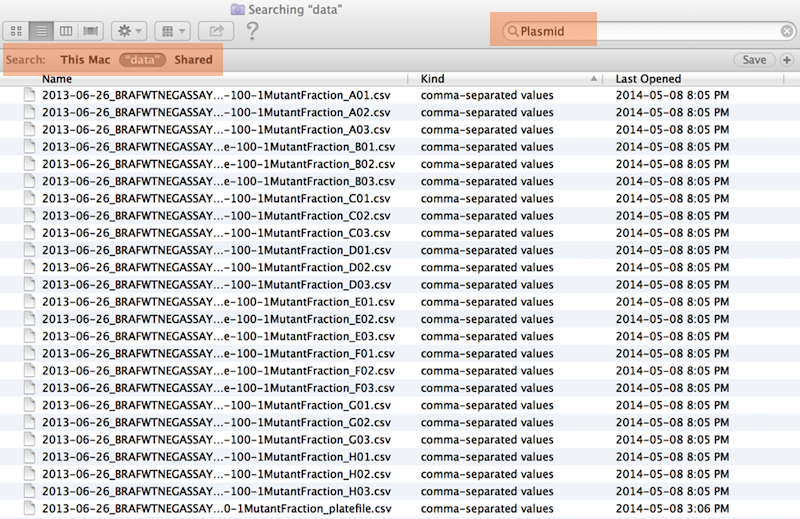
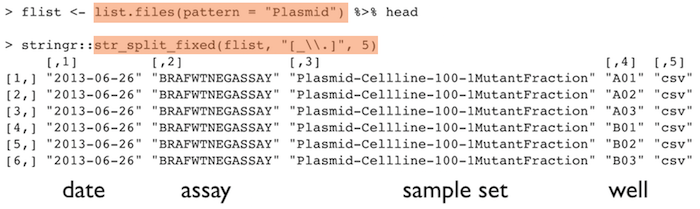
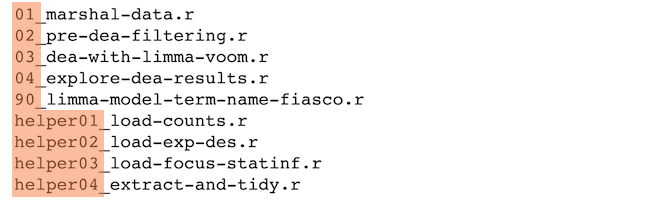

Stat 585 - File Organizations
Heike Hofmann
Source
Material for this slide deck comes from
Names matter
What works, what doesn’t?
NO
myabstract.docx
Joe’s Filenames Use Spaces and Punctuation.xlsx
figure 1.png
fig 2.png
JW7d^(2sl@deletethisandyourcareerisoverWx2*.txt
YES
2014-06-08_abstract-for-sla.docx
joes-filenames-are-getting-better.xlsx
fig01_scatterplot-talk-length-vs-interest.png
fig02_histogram-talk-attendance.png
1986-01-28_raw-data-from-challenger-o-rings.txt
Three principles for (file) names
- Machine readable
- Human readable
- Plays well with default ordering
Awesome file names :)

Machine readable
- Regular expression and globbing friendly
- Avoid spaces, punctuation, accented characters, case sensitivity
- Easy to compute on
- Deliberate use of delimiters
Globbing
Globbing is the process of expanding a non-specific file name containing a wildcard character into a set of specific file names that exist in storage on a computer, server, or network. A wildcard is a symbol that can stand for one or more characters.
WhatIs.com
We’ll deal with regular expressions later - right now think of them as search terms.
Globbing
Excerpt of complete file listing:

Example of globbing to narrow file listing:

Same using Mac OS Finder search facilities

Punctuation
Deliberate use of "-" and "_" allows recovery of meta-data from the filenames:
"_" underscore used to delimit units of meta-data I want later"-" hyphen used to delimit words so my eyes don’t bleed


This happens to be R but also possible in the shell, Python, etc.
Recap: machine readable
- Easy to search for files later
- Easy to narrow file lists based on names
- Easy to extract info from file names, e.g. by splitting
- New to regular expressions and globbing? be kind to yourself and avoid
- Spaces in file names
- Punctuation
- Accented characters
- Different files named
foo and Foo
Human readable
- Name contains info on content
- Connects to concept of a slug from semantic URLs
Example
Which set of file(name)s do you want at 3 a.m. before a deadline?

Embrace the slug
Human readability: Easy to figure out what the heck something is, based on its name
Plays well with default ordering
Plays well with default ordering
- Put something numeric first
- Use the ISO 8601 standard for dates
- Left pad other numbers with zeros
Examples
Chronological order:

Logical order: Put something numeric first

Dates
Use the ISO 8601 standard for dates: YYYY-MM-DD
Left pad other numbers with zeros
If you don’t left pad, you get this:
10_final-figs-for-publication.R
1_data-cleaning.R
2_fit-model.R
which is just sad :(
Recap: Plays well with default ordering
- Put something numeric first
- Use the ISO 8601 standard for dates
- Left pad other numbers with zeros
Recap: Three principles for (file) names
- Machine readable
- Human readable
- Plays well with default ordering
Pros
- Easy to implement NOW
- Payoffs accumulate as your skills evolve and projects get more complex
Go forth and use awesome file names :)